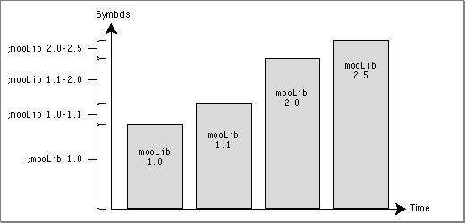

Put New Symbols in New Logical Libraries
A developer can give logical names to different portions of a library and then have multiple'cfrg'0entries to point to a single implementation. For example, consider the breakdown ofmooLibin Figure 3-4.Figure 3-4 Multiple logical names for a single library

The updated portion of each new version has its own logical name. For example, if your program called a routine introduced between versions 1.1 and 2.0 of
mooLib, it would look for the symbol in the library;mooLib_1.1-2.0. The advantage here is that the name of the library explicitly indicates the version ofmooLibthat introduced any particular export. A disadvantage is that since a new library name is added with each revision, the number of names may become unwieldy over time.